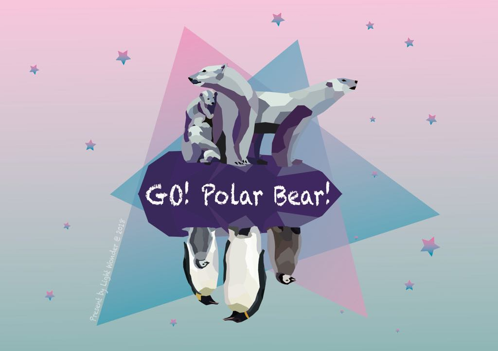

We build a polar bear survival game in REAL Arctic world ! The game built in series maps of Arctic in different years (2007, 2010, 2016), with real ice, real sea boundary, real ecology and environment. The normal data visualization tools can only 'PROVIDE' data. For a general audience, these data are just some numbers and maps, and means nothing to them. Even they understand how to access, they still don't know what should be found within the content. To engage the user interacting with the data, we believe that the game is the best way of presenting. By performing the change of time and space, players can act as a polar bear to explore and realize what happen to Arctic Cycle.
Reference link: 2018 NASA Space Apps challenges
